DM Monitor manual
Install it once on the church computer, then every musician adjusts their own in-ear or wedge mix from their phone.
What DM Monitor is
DM Monitor runs on one computer (a Mac, a Windows PC or a Raspberry Pi) on the same network as your Yamaha console. Musicians open it on their phones and move only the sends of their own mix — the same thing the tech would do on the console, but without asking.
- The app adjusts the mix; the sound still reaches the musician through their in-ears or wedge, as always.
- Nothing is installed from an app store on the phones — it's a web app you add to the Home Screen.
- Works with the Yamaha DM series (and TF, CL/QL, Rivage). DM Monitor is not made or endorsed by Yamaha.
What you need
- A Yamaha console with network control on (the same network as the computer).
- One computer that stays on during rehearsals and services: Mac (macOS 12+), Windows 10/11 (64-bit), or Raspberry Pi 4/5 with the 64-bit Raspberry Pi OS.
- Wi-Fi where the phones can reach that computer. Ideally the computer is wired to the same switch as the console.
Install on a Mac
- Download the .dmg from the download page (Apple Silicon for M1/M2/M3/M4, Intel for older Macs).
- Open it and drag DM Monitor to Applications.
- The first time: right-click the app → Open → Open. (The app is free and not signed with a paid Apple certificate; macOS asks once.)
- The Admin opens in its own window and a DM Monitor icon appears in the menu bar. It starts by itself when you log in.
Install on Windows
- Download DM-Monitor-Setup-…-win-x64.exe.
- Run it. If you see “Windows protected your PC”: More info → Run anyway.
- Accept the admin prompt — the installer opens the firewall for DM Monitor so phones can connect.
- DM Monitor opens and stays in the system tray (next to the clock). It starts when you sign in.
Install on a Raspberry Pi
A Pi is the most reliable option: a small box next to the console that nobody turns off by accident. Use a Pi 4 or Pi 5 with Raspberry Pi OS 64-bit (Lite is enough), wired to the console's switch.
tar xzf dm-monitor-pi-<version>-arm64.tar.gz
sudo ./dm-monitor/install.sh --hostname dm-monitor- Musicians then use
https://dm-monitor.local:8080. - It runs as a service: starts with the box and restarts by itself.
- Logs:
journalctl -u dm-monitor -f· Go back one version:sudo dm-monitor-rollback. - If the box gets a new IP address, restart it so the certificate covers the new address.
First setup
- Open the Admin (the app window, or
https://<computer>.local:8080/admin). First login: admin / admin — change it in Security & backup. - Overview shows the console once it's found. Not found? See Network.
- Mixes: hide the mixes musicians shouldn't pick (matrix, FX, etc.) and set up each musician's mix — see Mixes.
- Share the app link with the team (Overview → Share setup guide, or tray menu → link for musicians).
Updates
DM Monitor checks for new versions by itself. When one is out, the Admin shows “DM Monitor x.y is available → Update now” (and the Mac/Windows tray says so too).
- It never updates on its own — you press Update, ideally not during a service. Connected musicians drop for about 20 seconds and reconnect by themselves.
- Every download is checked before installing; if anything fails, the current version keeps running.
- Want early versions? Admin → Overview → Software version → “Get beta versions”.
- Phones update by themselves the next time they open the app.
Musicians: get the app on your phone
- Join the church Wi-Fi the tech tells you (the same network as the console).
- Open the link the tech shared. The first time, the page walks you through installing a certificate — it lets your phone talk securely to the church computer. It's a one-time step per phone.
- iPhone: after installing, also switch it on in Settings → General → About → Certificate Trust Settings.
- Open the app and add it to the Home Screen (Share → Add to Home Screen). From then on it opens like any app.
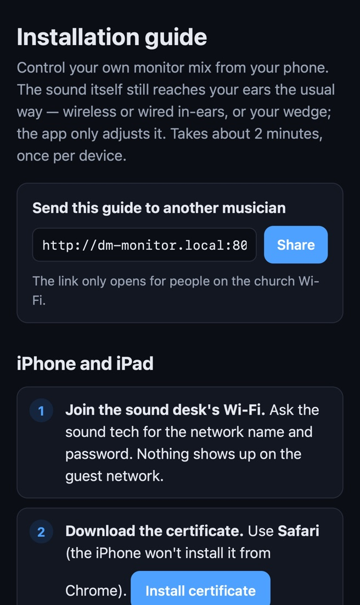
Choose your mix
- Type your name (so the tech knows who's on which mix), pick the console and then your mix. “Stereo” mixes are one item (e.g. Mix 1–2).
- Next time, Continue takes you straight back.
- ☰ → Change mix to switch.
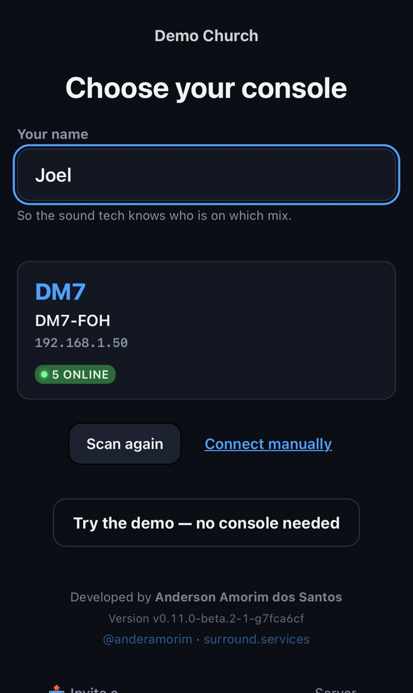
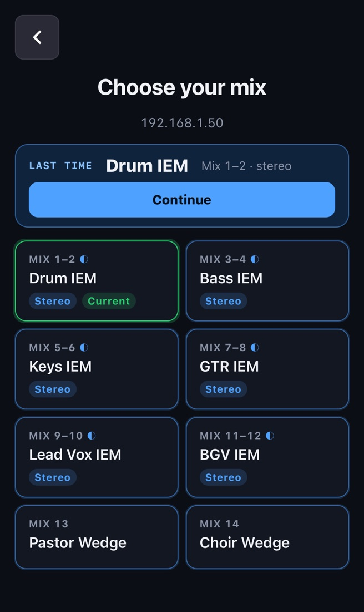
The mixer screen
- Each channel: number, name in the console's color, a fader with the level meter inside, and ON. Your mix's MASTER is on the right.
- Grab the fader (not the track) and drag. Move your finger sideways while dragging for FINE (small steps). Very fast jumps up are limited on purpose — protects ears.
- ◀ ▶ pages through the channels. Phone upright: 4 channels per page; sideways: 8.
- Stereo mixes have pan: the button at the top of the channel. Double-tap = center.
- ☰ → Active now: shows first the channels that have signal.
- The dot next to the mix name: green = connected. If it goes red, the app reconnects by itself.
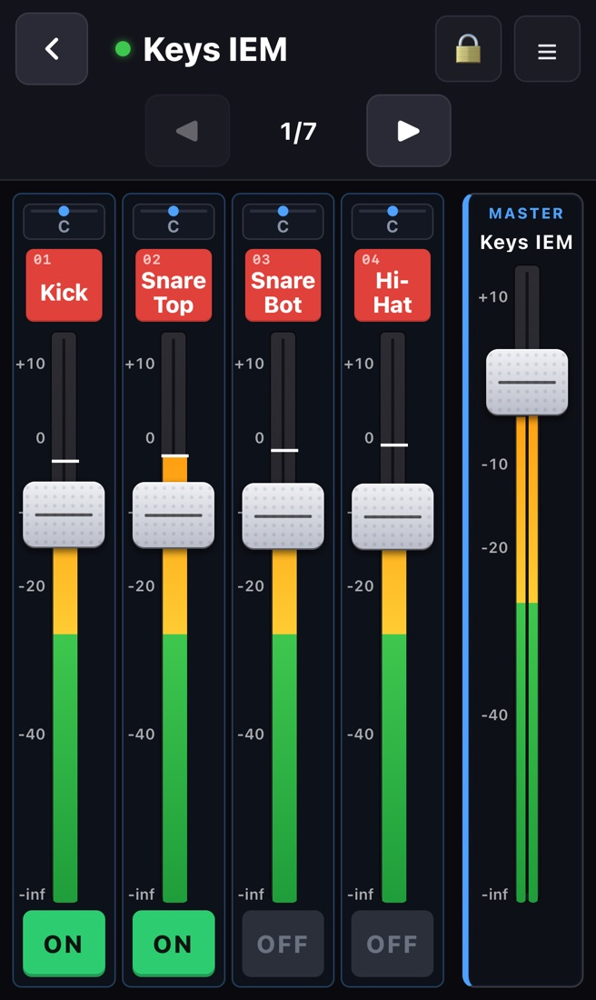
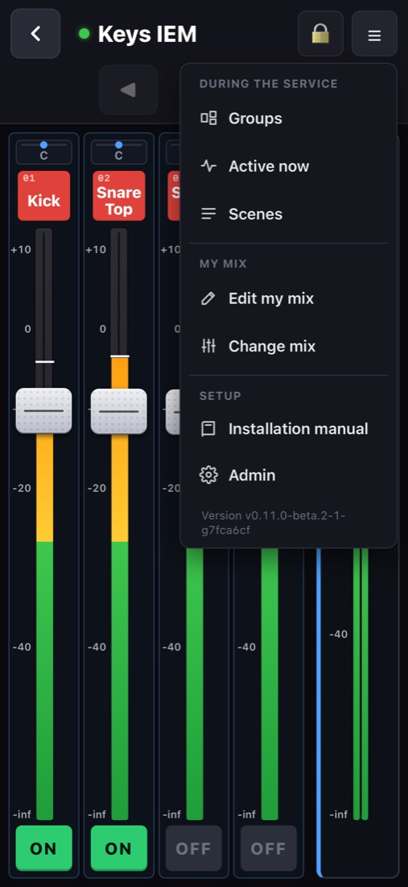
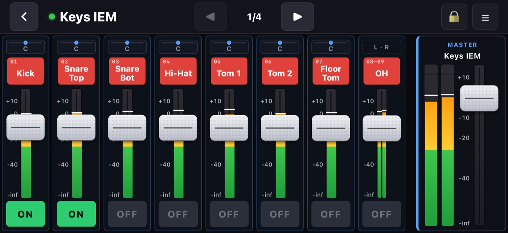
Edit my mix — your own screen
☰ → Edit my mix: drag channels into the order you like and tap 👁 to hide the ones you don't use.
- It only changes your screen — never another musician's, never the tech's setup.
- It's saved automatically and is there next time you open the app on this phone.
- Back to the mix default returns to the layout the tech prepared.
- Channels the tech locked don't appear here (see hidden vs locked).
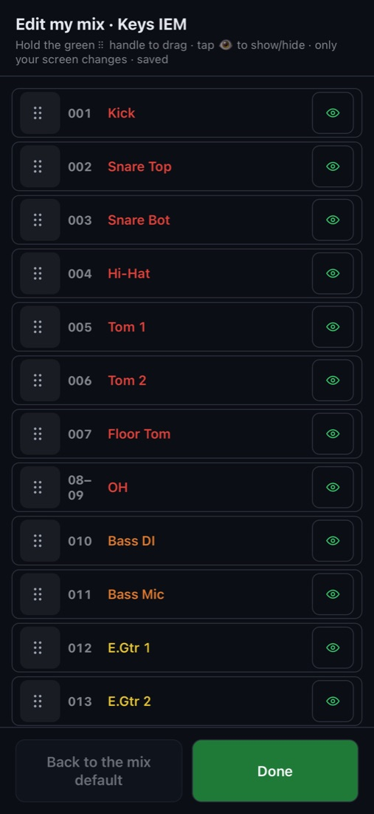
Groups
- ☰ → Groups: put channels together (e.g. Drums) and move them with one fader — the balance between them is kept.
- The group's ON remembers who was on.
- Groups belong to the mix, so they show on every phone using it.
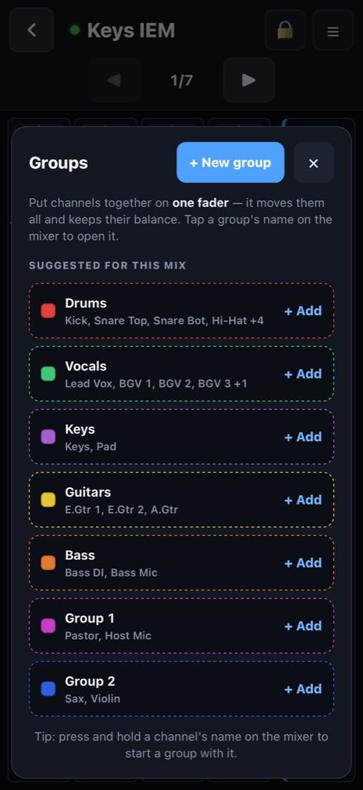
Scenes
A scene is a snapshot of your whole mix: volumes, ON/OFF, pan and your screen (order + hidden channels).
- ☰ → Scenes → + Save. A password is optional (protects it from being overwritten or deleted).
- Tap a scene to load it. You'll be asked first; right after loading, Undo appears for a few seconds.
- You can also load a colleague's scene (e.g. the vocal leader's “Sunday” base): it lands on your mix and your screen only.
- New phone? Load your scene and your mix and screen come back.
- Search by name or musician; All / Mine; ⋯ = save over it or delete.
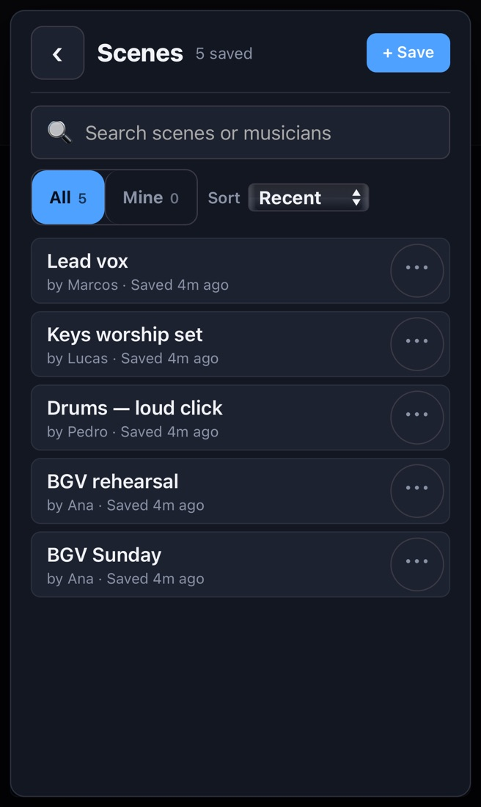
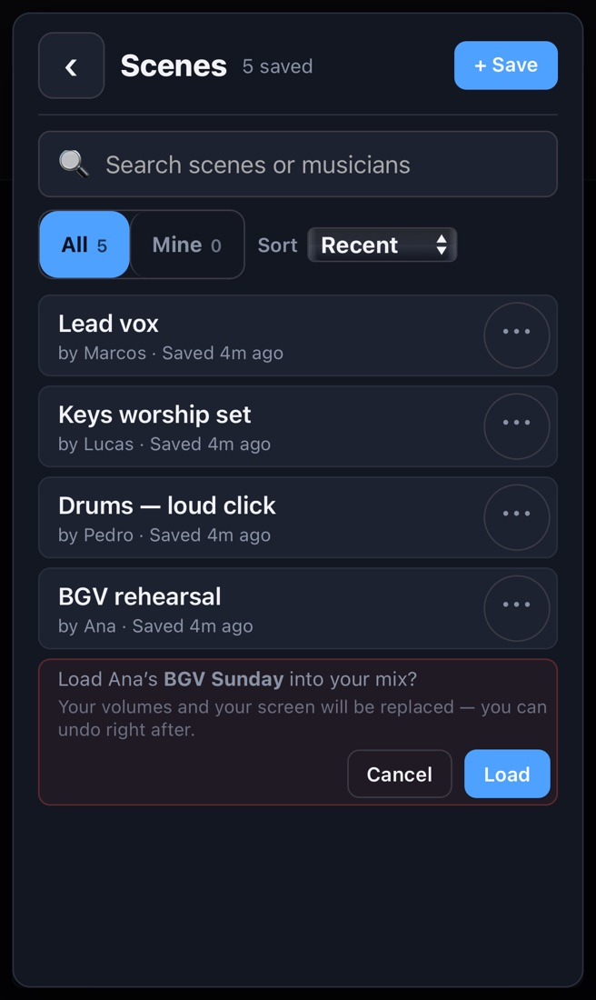
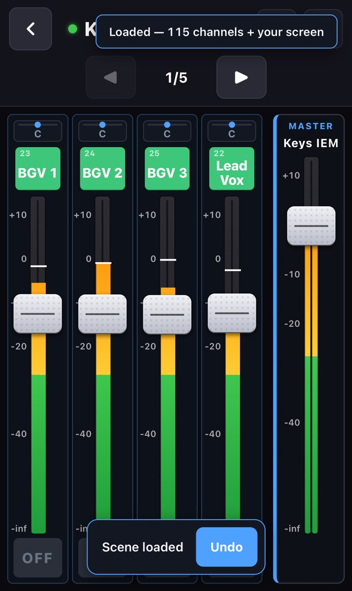
Lock the screen
Tap the 🔒 at the top during the service so nothing moves by accident. Hold it for 1 second to unlock.
Sound tech: opening the Admin
From the computer: the DM Monitor window (or tray → Open Admin). From any device on the network: https://<computer>.local:8080/admin. Sections: Overview · Mixes · Musicians · Scenes · Look & branding · Security & backup.
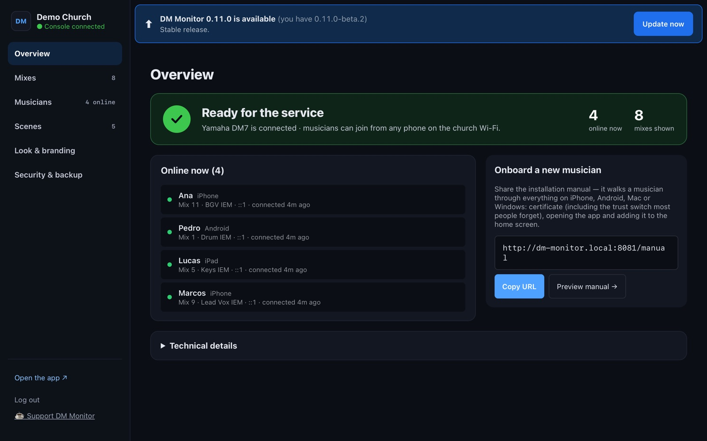
Mixes: what each musician sees
- Hide mixes nobody should pick (FX, matrix, PA…). Stereo pairs are one item and every change applies to both sides.
- Open a mix to set its default screen: drag to reorder, 👁 to hide. The preview on the right shows the musician's first page.
- Hide unnamed channels / Hide utility channels clean up a mix in one tap.
- Master limit: the highest level the musician can set on their master — protects ears and avoids distortion.
- Templates: save a layout and apply it to several mixes.
- Changes are a draft until you press Save changes.
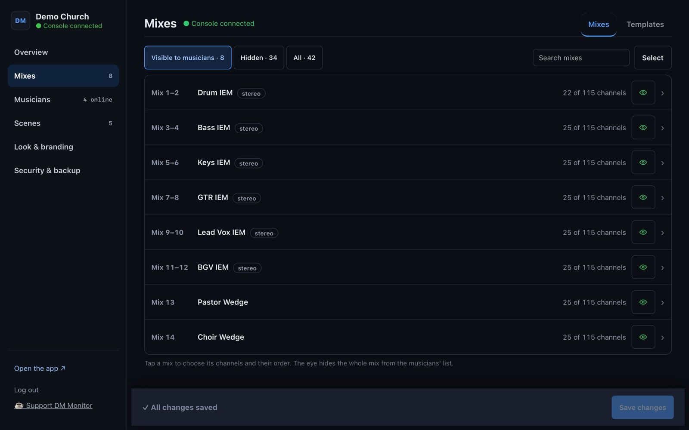
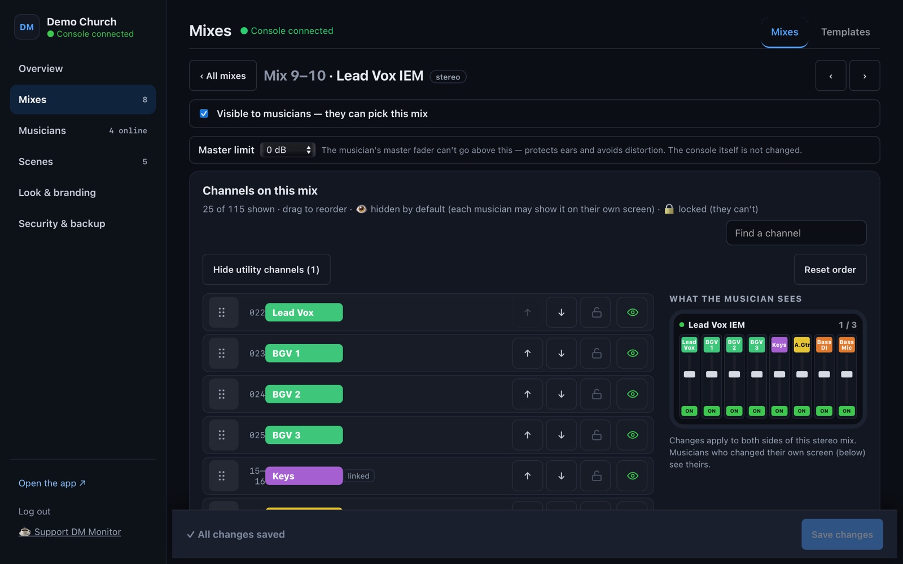
Hidden vs locked channels
| 👁 Hidden | 🔒 Locked | |
|---|---|---|
| Musician sees it at first | No | No |
| Musician can show it on their own screen | Yes | No |
| Musician can move it (fader, ON, pan, scenes) | Yes, once shown | Never |
| Use it for | A tidy starting screen | Channels a musician must not touch (e.g. the drum mics on the singers' mix) |
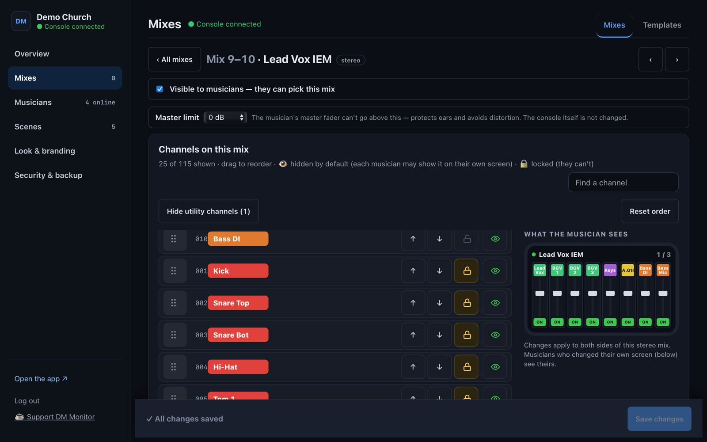
Nothing is locked by default. Lock with the padlock next to the 👁 in the mix editor; it's saved immediately and covers both sides of a stereo pair and linked L/R inputs.
Musicians and their screens
- Musicians shows who is connected and on which mix.
- At the bottom of each mix in Mixes: Musicians with their own screen — everyone who rearranged their screen. Back to default resets one person; Reset all resets the mix.
- Scenes: rename or delete musicians' scenes.
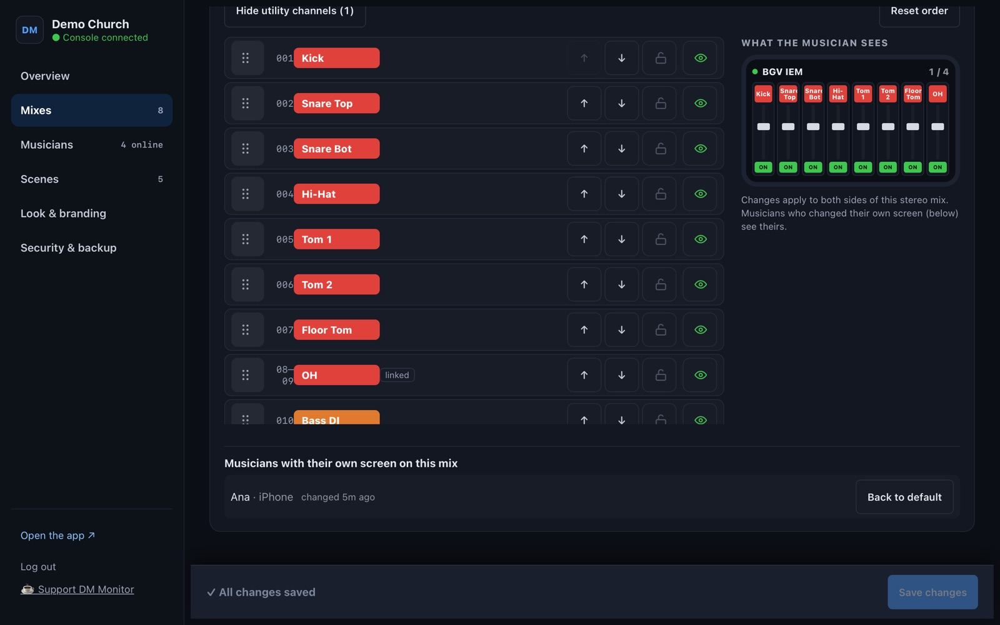
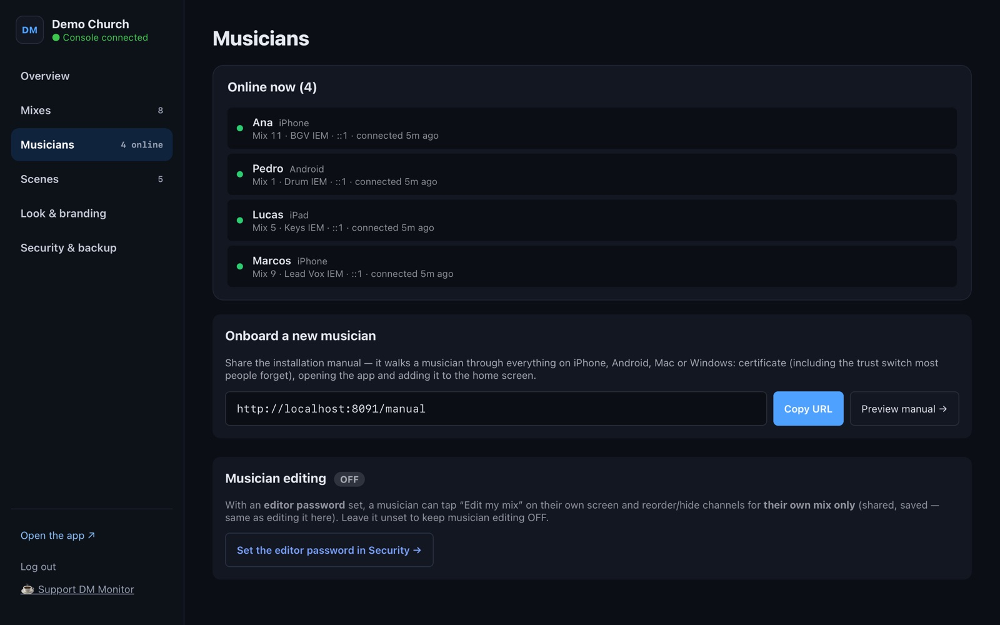
Passwords and backup
- Admin password: change it on day one.
- Console password (optional): musicians type it once to pick the console.
- Export / Import settings (mixes, templates, scenes, logo) — use it before big changes or to move to another computer. Automatic backups are kept too.
- Settings follow the console's identity, so they survive the console getting a new IP.
Network
- The computer, the console and the phones must be on the same network. Many churches have several (production, office, guest, Dante): use the one the console is on.
- Don't use the Dante network for DM Monitor.
- Computer on two networks? Admin → Overview → Discovery network: pick the console's.
- Guest Wi-Fi with “client isolation” blocks phones from reaching the computer — use a network without it.
Troubleshooting
| What you see | Do this |
|---|---|
| Console doesn't appear | Computer and console on the same network? Admin → Overview → Discovery network → Scan now. Or “Connect manually” with the console's IP. |
| Phone says “not private” / can't connect | Install the certificate (open http://<computer>.local:8081). On iPhone, switch it on in Certificate Trust Settings. |
| Phone shows an old version | Close the app completely and open again. Still old? Remove it from the Home Screen and add it again (the certificate stays). |
| I can't find my mix | The tech hid it — ask them. |
| A channel is missing | ☰ → Edit my mix → show it. Not in the list? The tech locked it. |
| The fader won't go higher | Master limit set by the tech, or the safety limit on fast jumps — drag slower. |
| Everything disconnected at once | Is the computer on and DM Monitor running (tray icon / Pi powered)? Did the computer sleep? |
Logs: Mac/Windows tray → Show logs; Pi: journalctl -u dm-monitor -n 100.
Supported consoles
Yamaha DM7, DM7 Compact, DM5, DM5 Compact, DM3; also TF, CL/QL and Rivage PM. DM Monitor reads the channel and mix count, names, colors and stereo pairs from the console. Field-tested on the DM7; other models are tested against simulations.
Glossary
- Mix (bus) — one musician's monitor mix (in-ears or wedge).
- Send — how much of a channel goes into a mix. Your faders are sends.
- IEM — in-ear monitor.
- −∞ — fader all the way down (silent).
- Linked / stereo — L and R inputs (or two mixes) that move together.